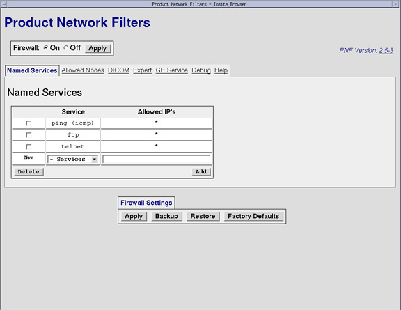
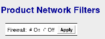
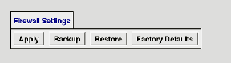
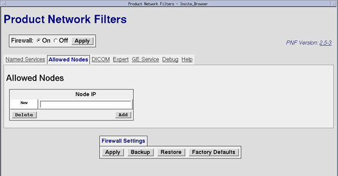
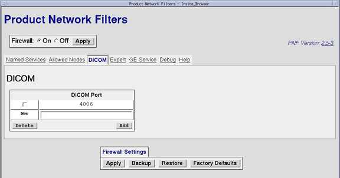
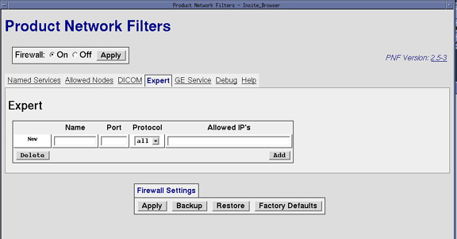
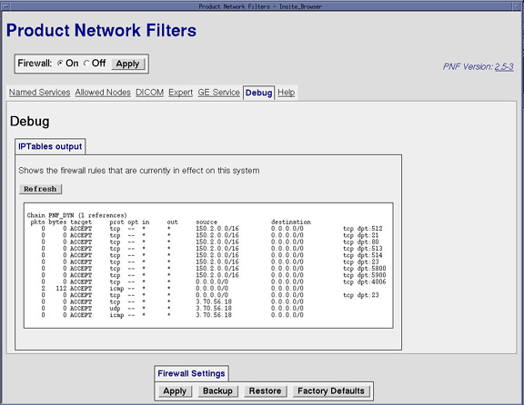
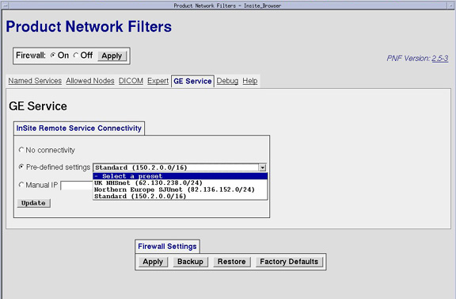

Proprietary to General Electric
Direction 5224328-800, Rev# 5
Dir 5224328-800 LightSpeed 5.X HP60 Limited Access Service
Methods - Adv.
Proprietary to General Electric |
| Last Revised: | 15 May 2007 |
Product Network Filters (PNF) is a software tool that allows a site Network Administrator to control traffic from the site's internal network to the Diagnostic Imaging System.
Application software must be up.
Click the [Service] icon to access the Common Service Desktop (CSD).
Select the following: Configuration → Configure PNF
The Main PNF Screen is displayed (see Illustration 1) .
| NOTE: | The GE Service tab may not be available on all systems. |
Illustration 1: Main PNF Screen (PNF Version 2.5-3 Example)

| ALL settings made in the PNF Tool are saved on the System State (Reconfig Info). If a NEW load from cold should need to be performed, the PNF settings will be restored during the System State Restore. | |
| The Firewall should be ON at all times; this is the default setting. If issues are found because of the Firewall, contact the OLC connectivity team to resolve issues. It is not acceptable to leave the firewall OFF. | |
In order to turn the firewall ON or OFF:
Click the radio buttons (see Illustration 2),
Click the [Apply ] button.
Illustration 2: Firewall Radio Buttons

The Firewall Settings buttons are common across all tabs in the PNF tool. See Illustration 3. These buttons can be clicked at any time and in any tab. The function of that button will be applied by the tool at the current state of all tabs.
Illustration 3: Firewall Settings Buttons

In order for the system to recognize any changes made, click the [Apply] button, any changes that have been made on ANY tab will be applied to the PNF configuration. A reboot is not necessary, the changes go into effect right after the button click
The [Backup] button should be clicked before making any changes on any of the tabs in PNF. This button allows that the current configuration is stored.
The [Restore] button will return the PNF configuration backup version.
The [Factory Defaults] button will reset the PNF configuration defaults.
The Named Services Tab, is the screen where the site's network administrator selects a standard networking service to dictate network traffic to or from this system to the site's network. See Illustration 4.
Illustration 4: Named Services Tab (PNF Version 2.5-3 Example)
To add a network service, click the drop-down menu labeled Services for a list of standard Networking Services.
Standard Networking Services offered are:
ftp
http
https
ldap
ntp
ping (icmp)
portmap
rexec
rlogin
rsh
ssh
ssl / tls
telnet
tftp
Select a network service from the drop-down menu, and click [Add] . This service is now added to the list.
Click [Apply] .
To delete a network service, check the box next to the Service on the list.
Click the [Delete] button.
Click [Apply] .
To view Allowed Nodes, open a Unix Shell and type:
{ctuser@hostname}cat /usr/g/config/modality.filters
The Allowed Nodes tab is where the IP address is entered for the network service(s) added via the Named Services tab. See Illustration 5.
Illustration 5: Allowed Nodes (PNF Version 2.5-3 Example)

Enter the IP address for the network service in the field below Node IP.
Click [Add] .
Once all Nodes have been added, click [Apply ] .
Check the box next to the Node IP in the list.
Click the [Delete] button to remove the Node IP from the list.
Once all changes have been made, click [Apply] .
The DICOM screen may be used to verify that the correct DICOM port was populated during installation. This field should be auto-populated during the initial setup of the DICOM ports. Additional DICOM ports can also be added at this screen. See Illustration 6.
Illustration 6: DICOM Tab (PNF Version 2.5-3 Example)

Enter the DICOM Port in the field next to the New label.
Click [Add] .
Once all DICOM Ports have been added, click [Apply ] .
Check the box next to the DICOM Port in the list.
Click the [Delete] button to remove the DICOM Port from the list.
Once all changes have been made, click [Apply] .
The Expert Tab gives the network administrator the ability to create rules for the network services allowed in the Named Services screen.
This tab is also used to view all of the application rules that have been created. See Illustration 7.
Illustration 7: Expert Tab (PNF Version 2.5-3 Example)

To create a rule for the firewall, enter the application name in the Application Name field.
Enter the Port info in the Port field.
Click on the Protocol drop-down menu for the rule to be applied (all, tcp, udp).
Enter the IP address to which this rule will be applied.
Once all fields have been populated, click [Add] .
Click [Apply] .
Check the box next to the Application name in the list.
Click the [Delete] button to remove the rule from the list.
Once all changes have been made, click [Apply] .
The Debug Tab displays a list of all firewall rules applied to this system. See Illustration 8.
Illustration 8: Debug Tab (PNF Version 2.5-3 Example)

| NOTE: | The GE Service tab is only available to GE Healthcare service personnel. |
The GE Service tab sets up the Firewall to allow InSite Remote Service Connectivity / login. The Pre-defined settings selection must be configured properly. See Illustration 9.
Illustration 9: GE Service Tab (PNF Version 2.5-3 Example)

Troubleshooting the firewall can be done by turning the Firewall On and Off. Click [Apply] . See Illustration 10.
Illustration 10: Firewall Radio Buttons
| The Firewall should be ON at all times, this is the default setting. If issues are found because of the Firewall, contact the OLC connectivity team to resolve issues. It is not acceptable to leave the firewall OFF. | |
One all the necessary changes/settings have been made, perform the following steps:
Turn off the telnet port via instructions found in Named Services tab: Section 3.1.
| NOTE: | Turn off the telnet port to make the system most secure. |
At the Firewall Setting buttons, click [Apply] . See Illustration 11.
In order to store this configuration in the system data, click the [Backup] button. See Illustration 11.
Illustration 11: Firewall Setting Buttons